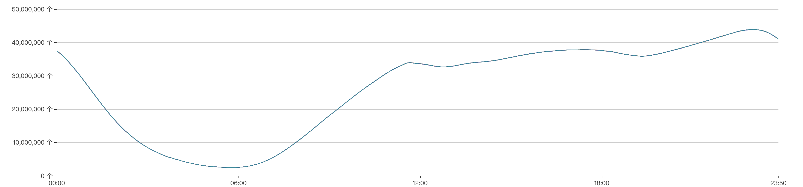
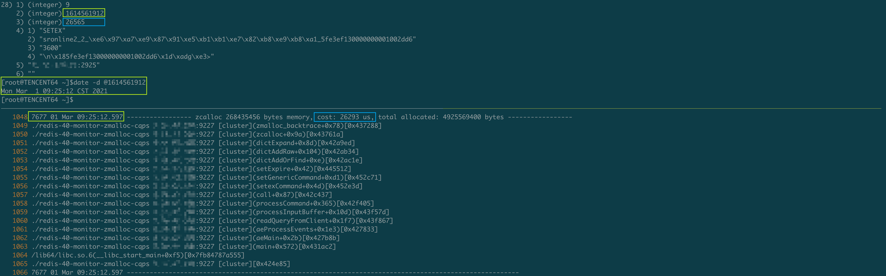
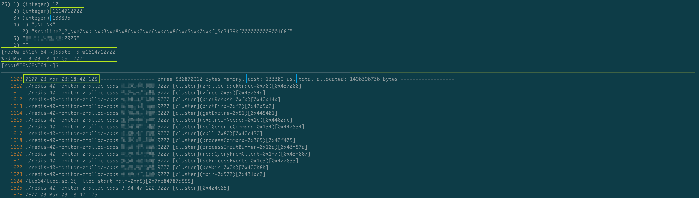
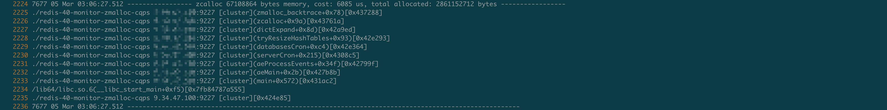

最近发现线上一个小红书的128分片的Redis 4.0实例每天在凌晨3:00~4:00这个时间段都会上报大量的Slowlog, 在其他的时间段也偶尔会有慢查上报, 一开始以为是用户执行了一些复杂度较高的命令导致的慢查, 但是通过查看Slowlog, 发现触发慢查的都是SETEX/UNLINK这种简单的命令, 而经过数据分析, 我们发现用户只用到了String这种数据结构, 并且用户的Key/Value基本都保持在40 Bytes以内, 没有大Key. 既然都是简单的KV, 那么SETEX/UNLINK命令慢查耗时高达几十甚至上百毫秒就十分诡异了.
此外通过我们连接实例中节点采集信息发现, 实例中的很多Redis节点在凌晨3:00~4:00这个时间段内都有databasesCron()函数执行时间耗时在几十甚至上百毫秒的现象, 如果在Redis侧单个周期内的某个函数都能卡50毫秒, 那么毫无疑问从Client执行Request到接受Reply延迟肯定会大于50ms了(Client发请求到Proxy, Proxy将请求转发给对应的Cache节点, Proxy接受到Cache节点的结果之后再回传给Client).
由于明确的知道在databasesCron()函数中耗时达到了几十甚至上百毫秒, 我们先分析了Redis在databasesCron中到底做了哪些事情:
activeExpireCycle(): 只有Master会调用, 是一种被动淘汰过期Key的方式, 主要是从db->expires字典中进行随机的采样, 将判断为已经过期的Key删除掉(该实例所有的Key都设置了过期时间), 但是由于函数内部做了耗时限制, 根据我们的配置, 在该函数中耗时理论不会超过1ms.expireSlaveKeys(): 只有可写的Slave会调用, 正常状态下, Slave中的数据都是由Master同步过来的, 对于过期Key, Slave也是等待Master通知删除, Slave无需自己从db->expires字典中进行采样检查. 但是如果Salve是可写的, 那么我们直接在Salve上写的带有过期时间的Key, Master是不知道的, 所以Salve需要定期调用该函数检测是否有自己管辖的Key存在过期. 该函数内部也做了耗时限制, 并且我们的Slave都是只读的, 所以该函数可以排除嫌疑.activeDefragCycle(): 用于内存碎片的整理, 主要是为了节省内存空间, 我们线上都没有开启, 可以排除嫌疑.tryResizeHashTables(): 前面的博客Redis中的Dict有提到过, Redis为了让Dict的负载因子维持在一个合理的范围内(在内存和Dict的查找效率中做权衡), 会根据Dict的状态自动做dictResize()和dictExpand()操作, 而该函数就是用于检查Dict是否由于空闲槽太多而需要缩容了, 理论上也不会耗费太多的时间.incrementallyRehash(): 我们知道Redis是单线程的, 为了不阻塞服务, 采用了另一种渐进式Hash的方式来将Key从旧的HashTable迁移到新的上, 每当从字典里面添加/删除/查找Key的时候都会触发搬迁操作(如果正在做ReHash的话), 但是这都需要对Dict进行主动访问才会触发. 如果服务当前比较空闲, 没有请求访问Dict, 但是此时正处于Rehash中, 可能会由于一直触发不了搬迁操作, 导致很长一段时间一直存在两个HashTable占用内存空间. 所以Redis在每个循环周期都会在正处于Rehash的Dict中花费最多1ms来进行Key的主动搬迁操作, 但是这个函数肯定不会执行几十ms, 可以排除嫌疑(我们尝试了将activerehashing关闭, 但是databasesCron()的耗时并没有改善).通过监控我们还有如下发现:
节点每天Key数量的变化范围都是一样的, 都是在23:00点达到最大值, 大概4000w, 然后23:00到第二天6:00这个时间区间内Keys数量一直处于下降趋势, 第二天6:00 key的数量达到一天当中的最低值, 大概240w.

节点每天凌晨3:00~4:00这个时间段都会先有一个内存几十MB的陡增, 然后又会有两个内存大概500MB左右的的抖降, 并且内存陡增的时间点和databasesCron()函数阻塞的耗时的时间点是完全对得上的, 这时候我们推测databasesCron()耗时几十ms很可能和这内存几十MB的陡增有关系.
因为通过数据分析确认用户并没有删除和写入大Key, 所以我们认为内存这么大抖动应该不是用户数据导致的. 而Key数量在这个时间段内一直处于下降趋势, 所以我们怀疑是不是由于Key数量不断减少, 字典中空槽的数量不断变多, Redis为了节省内存从而触发了dictResize()的逻辑, 在字典Resize的时候需要创建新的表, 这时候可能需要一块较大的内存, 而等到Key从旧表搬迁到新表结束之后又需要删除旧表释放内存
至于为什么有两个内存500MB左右的抖降,我们推测是由于这个实例所有的Key都带有过期时间, 所以数据字典和expires字典大小基本一致, 两个字典中Key数量变化趋势相同, 所以触发字典扩缩容的时间也基本一致. 而用户数据字典和expires字典在ReHash完都需要释放旧的HashTable, 但是由于两者渐进式Hash进度可能不一样, 所以结束时释放旧表的时间也不一样, 从而会有两波内存的抖降.
用户在每天晚上11点Key数量达到4000w的峰值, 这时候需要槽数量为2 ^ 26(67108864)的HashTable来存, 我们算了一下该HashTable占用的内存空间正好是512MB(2^26 * sizeof(dictEntry*))
紧接着我们翻看源代码确认了一下dictResize()的触发条件:
int htNeedsResize(dict *dict) {
long long size, used;
size = dictSlots(dict);
used = dictSize(dict);
return (size > DICT_HT_INITIAL_SIZE &&
(used*100/size < HASHTABLE_MIN_FILL));
}HASHTABLE_MIN_FILL是个常量, 不可调整, 值为10, 也就是说Redis在Dict中Key数量只有槽数量的10%时, 为了节省内存空间会触发字典缩容操作, 我们看上图, 发现凌晨3:20在内存陡增的那个时间点, Key数量大概是670w, 差不多就是等于2 ^ 26(67108864)的10%, 所以我们基本上可以断定在3:20这个时间点触发了dictResize()操作.
这时候我们怀疑慢日志的产生以及databasesCron()耗时很可能和Redis的字典扩缩容时需要创建/销毁HashTable有关(因为可能会涉及到大块的内存释放和分配), 于是我们在Redis的内存分配和内存释放函数中添加了对应的日志. 记录了内存分配/释放的大小以及耗时情况. 还有为了获取函数完整的调用链, 我们还添加了backtrace进行追踪.
下面列出了我们在zcalloc()函数中添加的日志(实际上我们对zfree(), zmalloc())也都添加了对应的日志.
void *zcalloc(size_t size) {
long long start_time = 0;
if (size >= memory_page_throttle) {
start_time = zmalloc_ustime();
}
void *ptr = calloc(1, size+PREFIX_SIZE);
if (!ptr) zmalloc_oom_handler(size);
#ifdef HAVE_MALLOC_SIZE
size_t zcalloc_size = zmalloc_size(ptr);
update_zmalloc_stat_alloc(zmalloc_size(ptr));
if (zcalloc_size >= memory_page_throttle) {
zmalloc_log("----------------- zcalloc %ld bytes memory, cost: %lld us, total allocated: %ld bytes -----------------", zcalloc_size, zmalloc_ustime() - start_time, zmalloc_used_memory());
zmalloc_backtrace();
zmalloc_log("-------------------------------------------------------------------------------------------------------\n\n");
}
return ptr;
#else
*((size_t*)ptr) = size;
update_zmalloc_stat_alloc(size+PREFIX_SIZE);
return (char*)ptr+PREFIX_SIZE;
#endif
}在对内核进行修改添加了详细的日志之后, 我们将新的Redis-Server当做从库挂在了实例中的某一个分片上等待问题再次复现.
在部署了新进程几天之后, 果然问题复现了, 又出现了慢查询:
这是一条关于SETEX的慢查, 在写入这个Key时Redis判断原先的Dict需要扩容了(可认为字典中Key的数量大于槽的数量时, Hash冲突的概率增大, 查找效率会降低, 为了性能考虑, 采取用空间换时间的策略, 扩容Dict), 于是触发了dictExpand()操作, 这时候需要创建一个更大的HashTable, 然后再进行ReHash操作. 正是为了创建HashTable, Redis在分配256Mb内存时阻塞了26ms, 阻塞的时间被统计在了SETEX命令的执行时间内, 从而达到了记录慢查的条件.

这是一条关于UNLINK的慢查询, 在删除这个Key时触发了渐进式Hash, 而此时正好将旧HashTable中的Key已经完全迁移到新的HashTable上去了, 所以Redis会将旧的HashTable释放, 在释放这个512Mb的HashTable时(这和我们前面提到的实例在凌晨3:00~4:00点内存会有500Mb左右的抖降是吻合的, 并且根据Key的数量分析, 那个时间段需要512Mb的HashTable来存储也是吻合的), 阻塞了133ms, 而这段时间被计算在了UNLINK命令的执行时长内, 从而记录了UNLINK命令的慢查.

此外我们发现这个实例的节点在每天凌晨3:00~4:00这个时间段内, Key的数量都会降到670w左右, 从而触发dictResize()操作, 而该操作内部需要为创建新的HashTable分配内存, 有一定的概率会阻塞一段时间(dictResize()函数在databasesCron()内部, 这也解释了为什么之前我们发现databasesCron()耗时很长, 我们目前抓取的这天只耗时了6ms).

问题查清楚之后我们开始思考解决方案, 实际上导致实例慢查的主要原因就是在Dict扩缩容过程中内存的分配和释放存在阻塞的风险(个人认为可能是zero memory或者Jemalloc内存碎片的清理原因导致的).
通过监控我们看到, 这个实例每天Key的数量变化趋势都一样, 但是由于Key数量的峰值和低谷差距特别大, 所以每天都会触发好几次dictExpand()以及dictResize()操作, 针对这个实例, 我认为每天Key的数量上限是固定的, 我们完全可以将HashTable的容量保留在可以存储当天Key峰值的状态, 这样就避免了一天当中频繁的创建HashTable, 并且消耗CPU资源在两个HashTable之间搬迁数据, 当然唯一的缺点就是可能会多消耗部分内存. 不过有些用户相较于内存, 可能对性能更加关注. 更何况Redis作为缓存, 偶尔阻塞一百多毫秒还是对业务会有明显的影响.
于是自己在Redis中添加了一个resize-hashtables-enabled配置项来控制Dict的缩容操作(也就是控制在databasesCron()函数内部是否触发tryResizeHashTables()操作), 避免小红书的实例每天由于Key数量的大起大落频繁的触发dictResize()/dictExpand()导致慢查, 并且向社区提交了PR#8611. 在和社区的沟通过程中, 他们表示这确实是一个问题, 但是resize-hashtables-enabled配置项过于定制化, 它们还是希望寻找出一个更加自然的方式来解决这个问题, 不将这些复杂的细节暴露给用户. 例如不再采用两个HashTable来搬迁数据, 而是将原来的HashTable进行扩张, 然后采取原地搬迁的策略, 这样可以最小化内存的分配和释放. 又或者以后可能会采用Rax树来替换Dict, 以解决这些问题, 不过这些都是长期的规划了, 短期内并不会实现.
线上实例数量越来越多, 各种各样奇奇怪怪的问题也会随之出现. 通过排查这些疑难的问题可以使我们有更多的思考, 并且在排查问题的过程中需要我们翻查源码, 加日志, 找证据, 这些流程都会使我们对内核的理解更深, 下次遇到相似的性能问题处理起来也更加有经验, 总体来说这次性能问题排查还是收获满满.